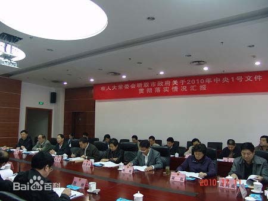

国务院关于加大统筹城乡发展力度进一步夯实农业农村发展基础的若干意见
时间：2014年4月5日 来源：财政部 作者：佚名 浏览量：3753
2009年国务院关于加大统筹城乡发展力度进一步夯实农业农村发展基础的若干意见国务院关于加大统筹城乡发展力度进一步夯实农业农村发展基础的若干意见国务院关于加大统筹城乡发展力度进一步夯实农业农村发展基础的若干意见国务院关于加大统筹城乡发展力度进一步夯实农业农村发展基础的若干意见国务院关于加大统筹城乡发展力度进一步夯实农业农村发展基础的若干意见国务院关于加大统筹城乡发展力度进一步夯实农业农村发展基础的若干意见国务院关于加大统筹城乡发展力度进一步夯实农业农村发展基础的若干意见国务院关于加大统筹城乡发展力度进一步夯实农业农村发展基础的若干意见国务院关于加大统筹城乡发展力度进一步夯实农业农村发展基础的若干意见国务院关于加大统筹城乡发展力度进一步夯实农业农村发展基础的若干意见国务院关于加大统筹城乡发展力度进一步夯实农业农村发展基础的若干意见国务院关于加大统筹城乡发展力度进一步夯实农业农村发展基础的若干意见国务院关于加大统筹城乡发展力度进一步夯实农业农村发展基础的若干意见国务院关于加大统筹城乡发展力度进一步夯实农业农村发展基础的若干意见国务院关于加大统筹城乡发展力度进一步夯实农业农村发展基础的若干意见国务院关于加大统筹城乡发展力度进一步夯实农业农村发展基础的若干意见国务院关于加大统筹城乡发展力度进一步夯实农业农村发展基础的若干意见国务院关于加大统筹城乡发展力度进一步夯实农业农村发展基础的若干意见国务院关于加大统筹城乡发展力度进一步夯实农业农村发展基础的若干意见国务院关于加大统筹城乡发展力度进一步夯实农业农村发展基础的若干意见
国务院关于加大统筹城乡发展力度进一步夯实农业农村发展基础的若干意见国务院关于加大统筹城乡发展力度进一步夯实农业农村发展基础的若干意见国务院关于加大统筹城乡发展力度进一步夯实农业农村发展基础的若干意见国务院关于加大统筹城乡发展力度进一步夯实农业农村发展基础的若干意见国务院关于加大统筹城乡发展力度进一步夯实农业农村发展基础的若干意见国务院关于加大统筹城乡发展力度进一步夯实农业农村发展基础的若干意见国务院关于加大统筹城乡发展力度进一步夯实农业农村发展基础的若干意见国务院关于加大统筹城乡发展力度进一步夯实农业农村发展基础的若干意见国务院关于加大统筹城乡发展力度进一步夯实农业农村发展基础的若干意见国务院关于加大统筹城乡发展力度进一步夯实农业农村发展基础的若干意见国务院关于加大统筹城乡发展力度进一步夯实农业农村发展基础的若干意见国务院关于加大统筹城乡发展力度进一步夯实农业农村发展基础的若干意见国务院关于加大统筹城乡发展力度进一步夯实农业农村发展基础的若干意见国务院关于加大统筹城乡发展力度进一步夯实农业农村发展基础的若干意见=

后一篇: